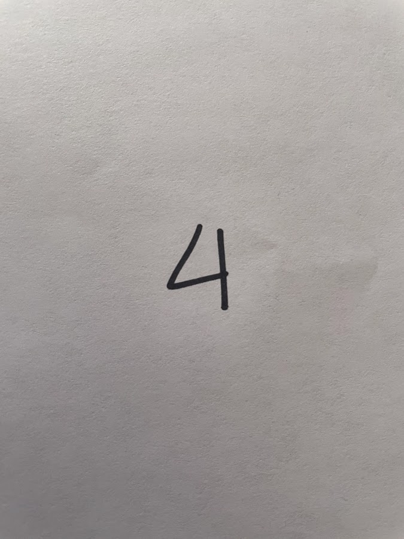
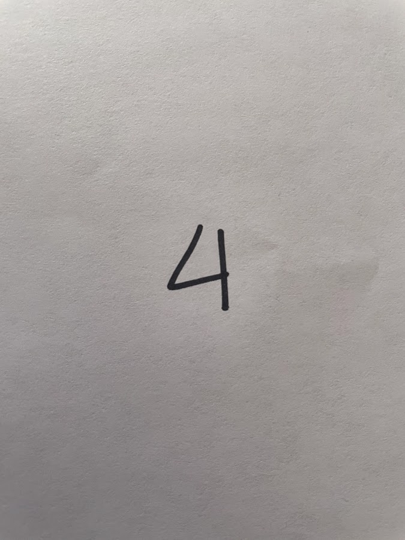
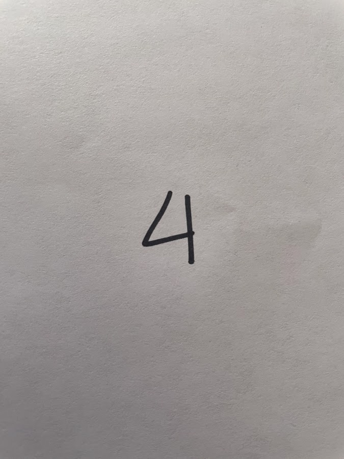

This task has four parts. Please do the following:
Write down numbers 0-9 with black sharpie on separate sheets of white paper.
Take a photo with a camera, cell phone, or other photography device of each number. Please refer to the examples provided in Part 1 (lower left). Upload those 10 images to Part 2 (lower right).
Click on "Next" to proceed.
Take a look at some example images from our data set in Part 3, and compare them with your own handwriting. Think about how they are similar and different.
Type up any observed differences in part 4. For example, do you think the digits were written by left-handed or right-handed people? At least 1 observation is required, but you can type up a maximum of 3. After, please explain the observations in the provided text area below.
When completed, click on ”Submit“ to complete this task.
Part 1. Write down numbers 0-9 with black sharpie on white paper.
Example 1: Example 2:

Part 2. Upload your files here:
Please press the shift key while selecting your images to select multiple files.
Part 3. Example images of handwritten digits.
Part 4. Enter in any biases from comparing your handwritten digits to our dataset.
 
